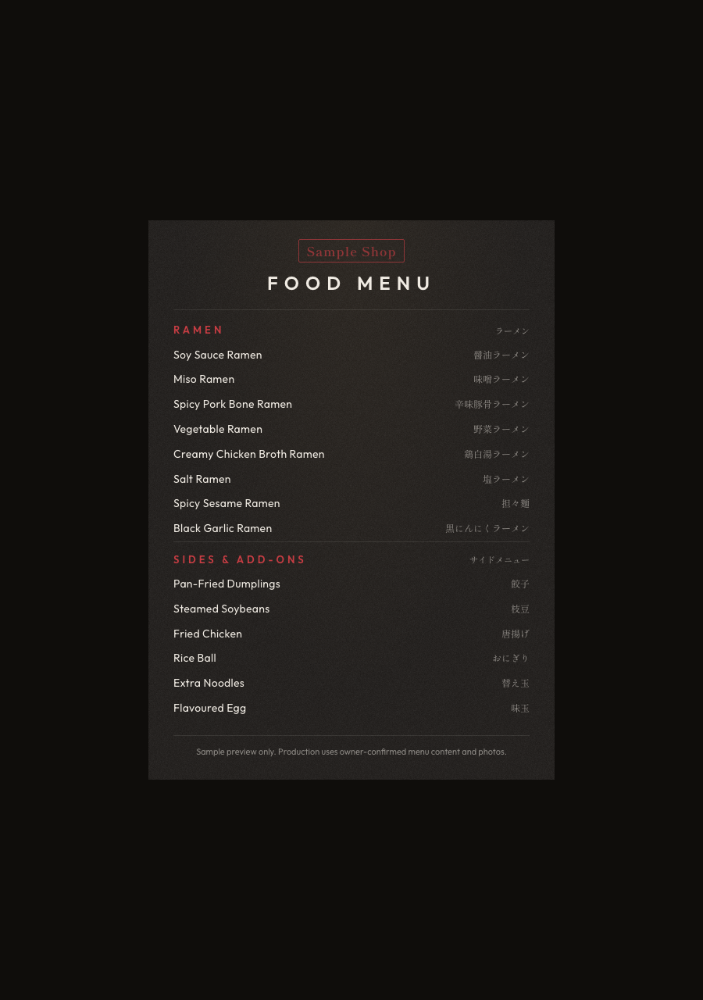
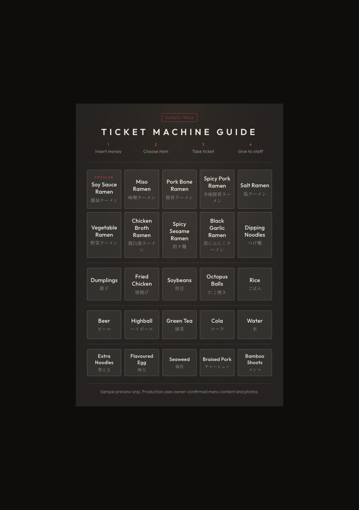

WebRefurb Menu
Ramen Ordering Preview
Illustrative preview for ramen shops. Production files use the owner's current menu content, approved prices, and selected photos.
Ordering fileCompact bilingual menu built for counter ordering and quick decisions.
Ticket-machine supportButton groups can be mapped into a short English guide when a ticket machine is part of the flow.
Owner approvalFinal export waits for source review, visual QA, and explicit owner approval.

